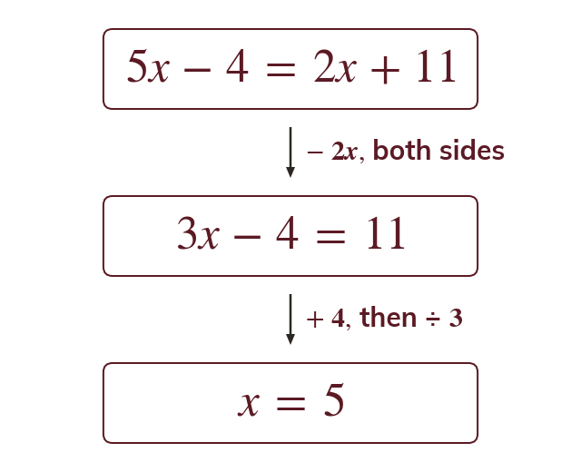
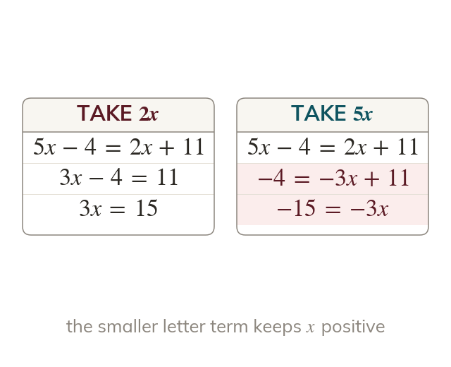
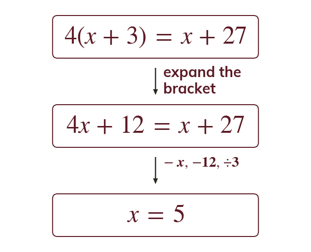
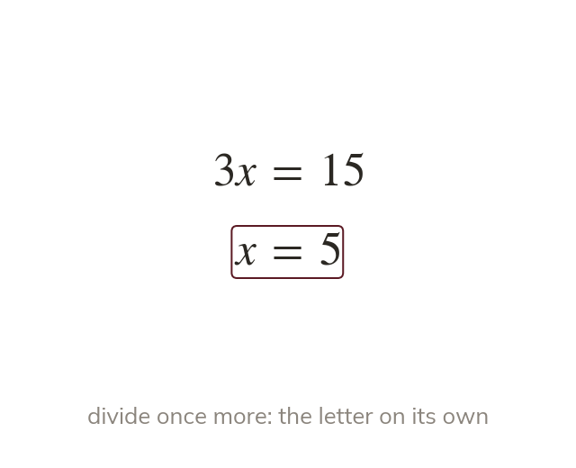

Gather the letters on one side
When the letter is on both sides, a letter term is subtracted from both sides. That is the same balancing move as subtracting a number.
Comparing two phone plans or two taxi fares puts the unknown on both sides at once. Collecting it on one side turns the problem back into one you can already solve.
Work down the page at your own pace. Write every answer in your book first, then click to check it.
Read each card, then follow the worked examples one step at a time.

When the letter is on both sides, a letter term is subtracted from both sides. That is the same balancing move as subtracting a number.

Subtracting the smaller letter term keeps the coefficient positive. The numbers then go to the other side.
Pick an answer. If it's wrong, the feedback tells you which mistake it was.
Read each card, then follow the worked examples one step at a time.

Expand the bracket first. Every other term stays where it is. Then gather the letters on one side.

The equation is finished only when the letter stands on its own. A value for is not yet the answer.
Pick an answer. If it's wrong, the feedback tells you which mistake it was.
Finished? Next lesson: 10.8.4 Forming Equations from Contexts.
Log in, then search for a code to practise that skill.